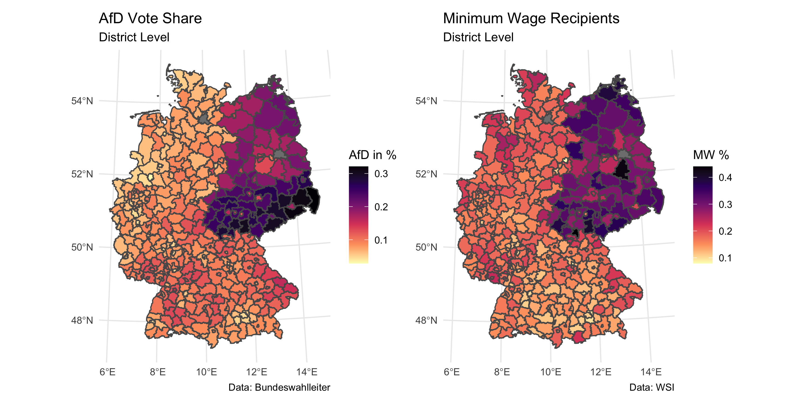

Slides
Sonneberg
- first district (“Landkreis”) in Germany to elect commissioner from AfD (52.8%)
- AfD = right-wing radical neo-nazi party with distinct populist agenda
- but also district with highest share of minimum wage recipients in Germany (44%)
Research Question: Does the political economy of the minimum wage explain the success of the AfD / right-wing populism?
Data
- Dependent Variable: AfD vote share in 2021 federal election (Bundeswahlleiter)
- Independent Variable: Share of minimum wage recipients in 2022 (WSI)

Literature
Method
- Model: Linear Regression
- Estimation: OLS
- additional Controls: unemployment rate, GDP per capita, share of foreigners, share of elderly, population density
\[ \text{AfD Vote Share}_{i} = \beta_0 + \beta_1 \text{MW Recipients}_{i} + \beta_2 \text{Controls}_{i} + \epsilon_{i} \]
Results

Regression Table
gives us the following table: